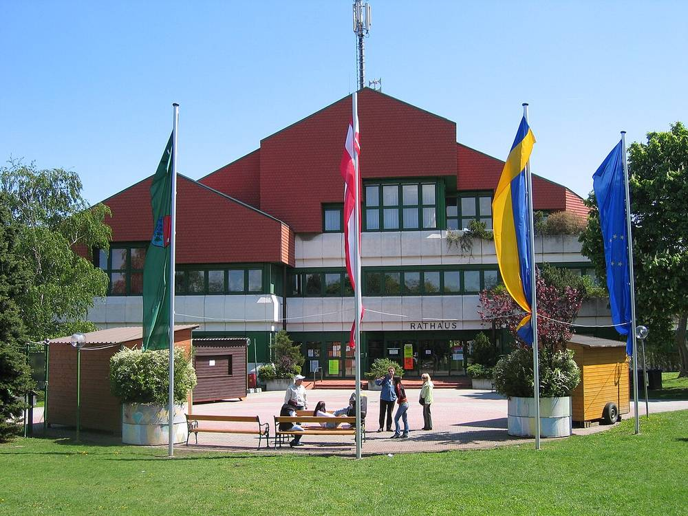

오스트리아 군트람스도르프 에너지공동체, 2027년 전력망 요금 초안에 반발…"공유 전기 할인 줄어"

규제기관 E-Control 초안은 확정 아냐…공동체 "이웃 간 할인율 57%→49%", 의견 제출은 11월 20일까지
오스트리아 재생에너지공동체(EEG) 군트람스도르프가 규제기관 E-Control이 내놓은 2027년 전력망 이용요금 초안에 반발하며 다른 공동체에도 의견 제출을 촉구했다. 초안은 의견을 받는 단계로 확정된 것이 아니며, 제출 기한은 11월 20일이다. 공동체는 자체 계산으로 이웃 간 공유 전기의 요금 할인율이 지금 57%에서 49%로, 같은 변전소 안 공유는 28%에서 22%로 낮아진다고 밝혔다. 또 낮 시간 지역 공유 전기의 가격 이점이 일반 여름 저요금 대비 kWh당 약 0.1센트로 줄고, 새 태양광에는 kW당 195유로의 접속료가 붙어 100kW 설비라면 최대 19,500유로가 든다고 주장했다. 게롤트 바부샤이크 공동체 대표는 "입법자는 전기를 나누라고 하는데, 요금 규정은 너무 싸게는 안 된다고 한다"고 비판했다. 공동체는 초안을 오스트리아 14개 망 지역 모두에 대입해 계산했고, 다른 공동체가 쓸 의견서 서식도 만들었다.
시민에너지 관점
할인율 8%포인트 하락과 최대 19,500유로의 접속료는 공동체가 자체 계산으로 내놓은 숫자이고, 초안도 확정이 아니어서 최종 요금표를 보고 다시 따져 봐야 한다. 규제기관의 설명은 이번 기사에 없어, 같은 계산이 맞는지는 별도 확인이 필요하다. 다만 공유 전기를 쓰라는 정책과 이를 덜 매력적으로 만드는 요금 설계가 부딪치면 시민 공동체의 참여가 꺾일 수 있다는 경고는 새겨 둘 만하다. 군트람스도르프는 초안을 14개 망 지역에 대입해 보고 의견서 서식을 나눠 시민이 요금 설계에 직접 목소리를 냈다. 한국도 에너지 공유 요금을 정할 때 시민 공동체의 의견을 받는 절차를 마련해야 한다.
출처: MeinBezirk(Bezirk Mödling) 2026-11-06 Rainer Hirss 원문 보기
オーストリア・グントラムスドルフのエネルギー共同体、2027年の送電網料金案に反発…「共有電気の割引が縮小」
規制機関E-Controlの案は確定ではない…共同体「近隣間の割引率57%→49%」、意見提出は11月20日まで
オーストリアの再生可能エネルギー共同体（EEG）グントラムスドルフが、規制機関E-Controlの示した2027年の送電網利用料金案に反発し、ほかの共同体にも意見提出を呼びかけた。案は意見募集の段階で確定したものではなく、提出期限は11月20日だ。共同体は独自の計算として、近隣間で共有する電気の料金割引率が現在の57%から49%に、同じ変電所内での共有は28%から22%に下がると明らかにした。また、昼間の地域共有電気の価格面の優位は一般の夏季低料金に比べてkWhあたり約0.1セントに縮み、新設の太陽光には1kWあたり195ユーロの接続料がかかり、100kWの設備なら最大19,500ユーロになると主張した。ゲロルト・バブシャイク代表は「立法者は電気を分け合えと言うのに、料金規則は安くなりすぎては困ると言う」と批判した。共同体は案をオーストリアの14の網地域すべてに当てはめて計算し、ほかの共同体が使える意見書の書式も作った。
市民エネルギーの視点
割引率の8ポイント低下と最大19,500ユーロの接続料は共同体が独自の計算で示した数字で、案も確定ではないため、最終的な料金表を見て改めて検討する必要がある。規制機関の説明は今回の記事にはなく、同じ計算が正しいかは別途確認が要る。ただ、電気の共有を促す政策と、それを魅力の乏しいものにする料金設計がぶつかれば、市民共同体の参加がくじかれかねないという警告は心に留める価値がある。グントラムスドルフは案を14の網地域に当てはめ、意見書の書式を配って、市民が料金設計に直接声を上げた。韓国もエネルギー共有の料金を決める際に、市民共同体の意見を聞く手続きを整えるべきだ。
出典: MeinBezirk(Bezirk Mödling) 2026-11-06 Rainer Hirss 原文を読む
奥地利京特拉姆斯多夫能源社区反对2027年电网费率草案…"共享电力折扣缩水"
监管机构E-Control的草案尚未确定…社区称"邻里间折扣率57%→49%"，意见提交截至11月20日
奥地利可再生能源社区（EEG）京特拉姆斯多夫，对监管机构E-Control提出的2027年电网使用费率草案表示反对，并呼吁其他社区也提交意见。草案尚处于征求意见阶段，并未确定，提交期限为11月20日。该社区根据自行测算称，邻里之间共享电力的费用折扣率将从目前的57%降到49%，同一变电站内共享的折扣率将从28%降到22%。社区还称，白天本地共享电力相对一般夏季低谷电价的价格优势，将缩小到每千瓦时约0.1分，新建光伏每千瓦还要收195欧元接入费，100千瓦的设备最多要付19,500欧元。社区代表格罗尔德·巴布沙伊克批评说："立法者说要分享电力，费率规定却说，但别太便宜。"该社区把草案套入奥地利全部14个电网区域做了测算，还制作了供其他社区使用的意见书模板。
市民能源视角
折扣率下降8个百分点和最高19,500欧元的接入费，都是社区自行测算得出的数字，草案也尚未确定，还要等最终费率表出来后再行核算。本文没有监管机构的说明，同样的测算是否成立需另行确认。不过，如果鼓励共享电力的政策与削弱其吸引力的费率设计相冲突，市民社区的参与可能受挫，这一警告值得记取。京特拉姆斯多夫把草案套入14个电网区域测算，并分发意见书模板，让市民直接参与了费率设计的发声。韩国在制定能源共享费率时，也应建立听取市民社区意见的程序。
来源: MeinBezirk(Bezirk Mödling) 2026-11-06 Rainer Hirss 查看原文
Austria's Guntramsdorf energy community objects to 2027 grid tariff draft, says discounts on shared power would shrink
Regulator E-Control's draft is not final; community says neighbor-to-neighbor discount falls from 57% to 49%; comments due Nov. 20
The renewable energy community (EEG) Guntramsdorf in Austria has objected to the regulator E-Control's draft grid-use tariffs for 2027 and urged other communities to file comments. The draft is at the consultation stage and is not final, with comments due by Nov. 20. By the community's own calculation, the tariff discount for power shared between neighbors would fall from 57% to 49%, and for sharing within the same substation from 28% to 22%. It also says the midday price advantage of local shared power over the standard summer off-peak rate would shrink to about 0.1 cent per kWh, and that new solar plants would face a connection fee of 195 euros per kW, up to 19,500 euros for a 100 kW system. Chairman Gerold Babuschik criticized the draft: "The legislator says: share your power. The tariff regulation says: but please not too cheaply." The community ran the draft through all 14 of Austria's grid areas and prepared a template that other communities can use for their comments.
Citizen Energy View
The 8-point drop in the discount and the connection fee of up to 19,500 euros are the community's own calculations, and the draft is not final, so the figures must be checked again against the final tariff table. The regulator's side is not in this report, so whether the same calculation holds needs separate confirmation. Still, the warning deserves attention: if a policy that encourages sharing power collides with tariffs that make it less attractive, citizen communities may lose heart. Guntramsdorf tested the draft across 14 grid areas and handed out a comment template, giving citizens a direct voice in tariff design. Korea should also set up procedures to hear citizen communities when it designs tariffs for energy sharing.
Source: MeinBezirk(Bezirk Mödling) 2026-11-06 Rainer Hirss Read the original